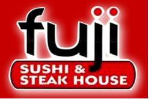

Nancy Fujita is our great founder of our amazing restaurant. The Japenese meaning of this amazing word means "mountain." Business began in 1998 when her 19-year-old best friends opened their first Fuji Restaurant in Wollaston, Massachusetts. Ever since then Fuji has become a staple of great Japanese food for communites all around. Our staff are commited and well trained to not only cook perfectly they are also well balanced in the shows they put on to bring a smile of pleasure to the viewer.
